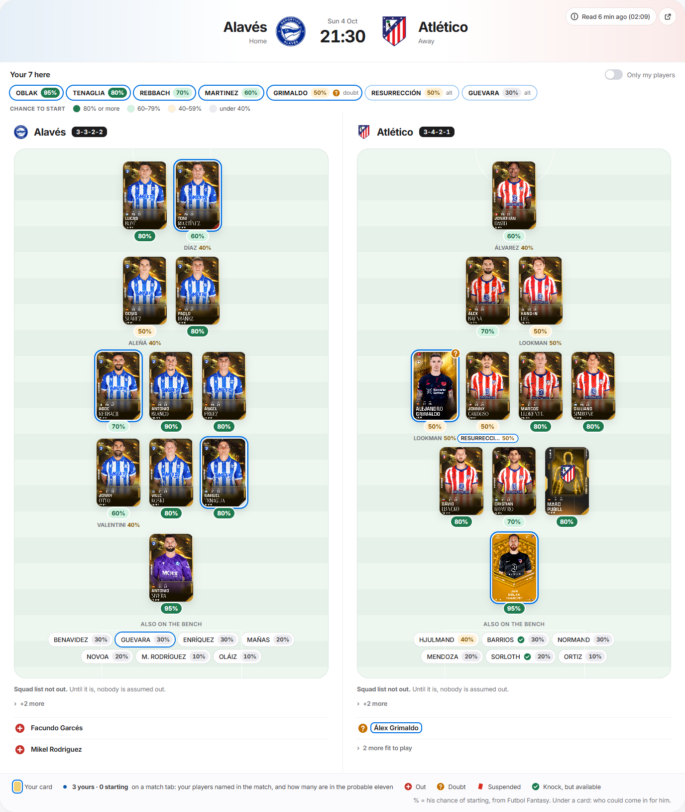
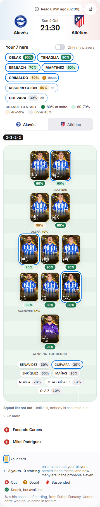

Every player, his card
Lineups after the 1 Oct review · Alavés–Atlético · yours ringed in blue, everyone else a real card of this season


- A card for everyoneYours is the card you own; every other player is a real Limited card of his from Sorare's public listing. A skeleton with his name holds the place while it loads; a face or silhouette only when Sorare has none.
- Who could come inUnder each starter's own card, as Futbol Fantasy draws it (Aleñá under Denis Suárez, Lookman under both Lee and Grimaldo).
- CrestsEach club's real crest, over a shield in its colour until it arrives.
- Called upTwo letters of the country on a blue chip, shown once the club's squad list is out.
- The colour keyFour dots under the match head say what the colours of the % mean.
- Tighter pitchThe two teams sit close, with no empty band between the rows.